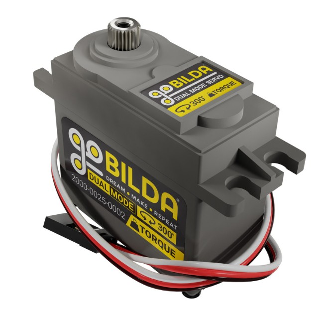
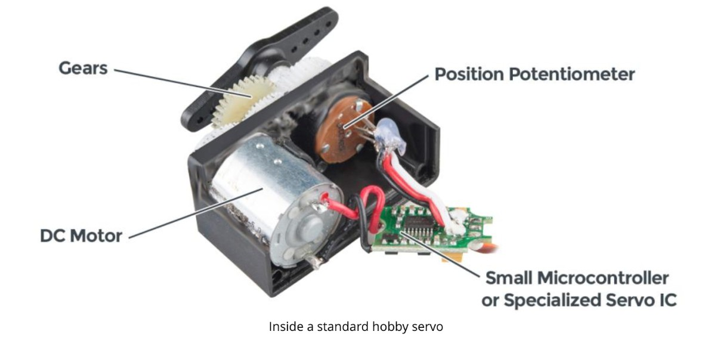
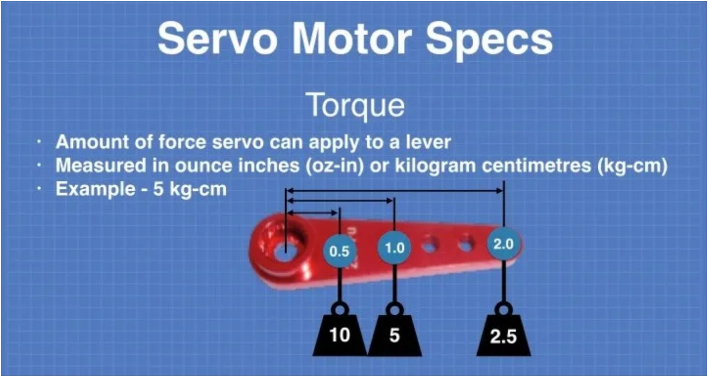
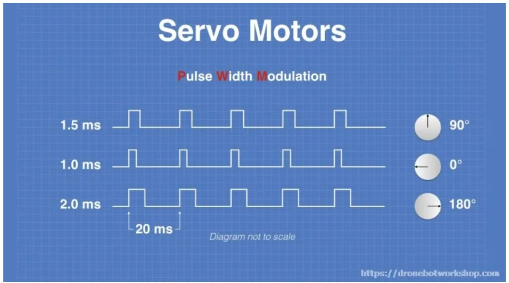

A servo is a small motor with a built-in control system. Unlike a plain DC motor that just spins when powered, a servo can control how it moves based on signals it receives.
Inside every servo are three key parts working together:
of the output shaft

commanded position.
> Think of it like: "Go to this exact position and stay there."
- One direction → spins forward - Opposite direction → spins backward - Neutral signal → stops
> Think of it like: "Spin at this speed in this direction."
Some servos can switch between both modes. The GoBilda servo on this robot is configured in CR mode for the indexer.
Servos are most useful when you need precise, repeatable positioning or a simple continuous spin without encoder wiring:
| Use case | Mode | |---|---| | Opening/closing a claw or gripper | Servo (positional) | | Driving intake rollers | CR (continuous) | | Rotating a wrist joint | Servo (positional) | | Tipping a bucket or tray | Servo (positional) | | Operating a gate or door | Servo (positional) | | Releasing a latch or trigger | Servo (positional) | | Driving an indexer feed wheel | CR (continuous) ← this robot |
The key advantage over a plain DC motor: for positional tasks you don't need encoders or PID loops to hold position — the servo does that internally.
Watch this video to learn more about how servos are used in FTC:
Servo Explanation and Tutorial
engineering notebook.
Every servo has a spec sheet with torque ratings. Torque is rotational force — it's what allows a servo to resist being pushed out of position when a load works against it.
Where torque comes from: The internal gear train trades speed for torque.
How torque is measured: kg-cm or oz-in. A servo rated at 5 kg-cm can hold 5 kg at 1 cm from the shaft — but holding force drops as distance grows:

This is why arm length matters so much when selecting a servo — the longer the arm, the harder the servo has to work. Don't forget to account for the weight of the arm itself, not just the payload.
Rule of thumb: Calculate the torque your mechanism needs, then pick a servo rated at least 1.5× that value as a safety margin.
(oz-in) for this scenario: A servo-powered arm picks up a pickleball weighing 1 oz. The arm is 8 inches long, weighs 8 oz, and its center of gravity is at the midpoint (4 inches from the servo). The ball is grabbed at the very end. Include a 1.5× safety factor.
Reference: GoBilda Dual Mode Servo spec sheet — based on the torque ratings, will this servo work for the example above?
When you write servo.setPosition(0.5) in Java, that command travels over
WiFi to the REV Control Hub, which translates the 0–1 value into a
PWM signal sent to the servo.
PWM stands for Pulse Width Modulation. Instead of a steady voltage, the Control Hub sends a signal that rapidly switches on and off. The key is *how long* it stays on during each pulse — the "pulse width."

Think of a dimmer switch: all the way down = 0 V (off), all the way up = full voltage (full brightness), halfway = half voltage. A potentiometer works the same way — a wiper sliding along resistive material produces a voltage proportional to its position.
In a servo, the output shaft is physically connected to the wiper. As the shaft rotates, the potentiometer voltage changes to match. The servo's brain reads that voltage and instantly knows the shaft's exact position.
The servo's circuit board converts the incoming PWM into a target voltage ("where do you want to go?") and compares it to the potentiometer voltage ("where are you now?"). The difference — the error — drives the motor: bigger error = more power, zero error = stop.
In CR mode, this feedback loop is disabled. The target position signal is re-interpreted as a speed command: center = stop, one extreme = full forward, opposite extreme = full reverse. The potentiometer is ignored. This is exactly what we need for the indexer — just spin until told to stop.
flywheel. On this robot it is a foam spikey roller (similar to the intake) driven by a GoBilda CR servo on Control Hub Servo Port 0.
// DC motor (old way):
DcMotor indexerMotor = hardwareMap.dcMotor.get("indexer_motor");
indexerMotor.setPower(1.0);
// CR servo (this robot):
CRServo indexerServo = hardwareMap.crservo.get("indexer_servo");
indexerServo.setPower(1.0); // same API — different hardware map
The code pattern is almost identical. The difference is:
hardwareMap.crservo instead of hardwareMap.dcMotorExpansion Hub — simpler wiring, one fewer cable run
Before using CRServo anywhere in your code, Java needs to know where to find
the class. You will add this import once and it covers both files.
Add your CRServo import below comment:
import com.qualcomm.robotcore.hardware.CRServo;
Without it, the compiler does not know what CRServo means and you will get a
"cannot find symbol" error.
For autonomous mode, ButtonX_Action.execute() runs the indexer
for a fixed time using sleep().
from the green block:
// ── Indexer / Fire ───────────────────────────────
// Get the indexer CR servo from the hardware map.
// This servo feeds balls from the hopper into the flywheel.
CRServo indexerServo = hardwareMap.crservo.get("indexer_servo");
// Show firing status on the Driver Hub
telemetry.addData("Action", "FIRE — indexing ball");
telemetry.update();
// Run the indexer servo at full power for 350ms.
// The indexer needs 250ms to advance one ball, so 350ms
// fires exactly one and stops before a second advances.
indexerServo.setPower(1.0);
sleep(350);
indexerServo.setPower(0.0);
// Confirm the shot
telemetry.addData("Action", "FIRED");
telemetry.update();
call — the robot cannot do anything else while sleeping. That is fine for autonomous, where the robot just fires and moves on.
In TeleOp, we use a hold-to-fire pattern instead of a timed sleep. While X is held, the servo spins. When X is released, it stops. This is non-blocking — driving and telemetry keep running at the same time.
Add your indexer servo code below comment:
// X button: fire — hold to spin the indexer CR servo.
// The servo feeds balls from the hopper into the flywheel.
// Press B first to spin up the flywheel, then hold X to fire.
CRServo indexerServo = hardwareMap.crservo.get("indexer_servo");
indexerServo.setPower(gamepad1.x ? 1.0 : 0.0);
during the pause. Checking a button each loop is non-blocking — everything runs normally. Use non-blocking in TeleOp, blocking in autonomous.
Now test the full scoring sequence:
to reach speed.
A to stop the intake.
speed yet. Give it an extra second after pressing B before holding X. The sim models flywheel inertia — you can actually see it spin up on the robot.
Try it on the competition field too! Click Return to Match, compile, and drive around. Pick up balls with the intake, spin up the flywheel as you approach the goal, then fire.